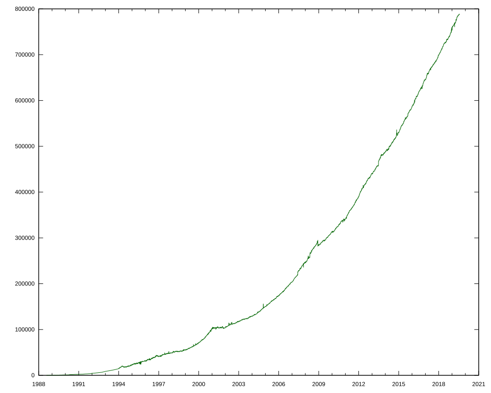
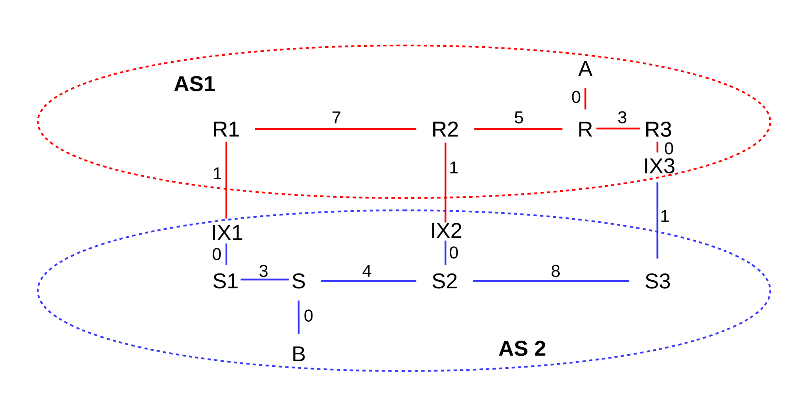
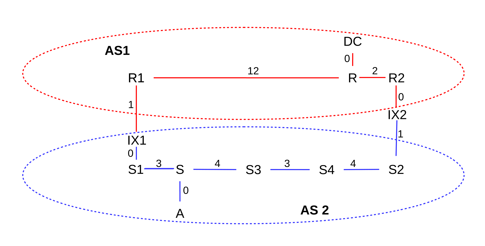

15 Border Gateway Protocol (BGP)¶
The Border Gateway Protocol, BGP, is the mechanism by which neighboring (that is, directly connected) ISPs share routing information.
In 13 Routing-Update Algorithms, we considered interior routing-update protocols: those in which all the routers involved are under common management. That management can then dictate the routing-update protocol to be used, and also the rules for assigning per-link costs. For both Distance-Vector and Link State methods, the per-link cost played an essential role: by trying to minimize the cost, we were assured that no routing loops would be present in a stable network (13.3 Observations on Minimizing Route Cost).
But now consider the problem of exterior routing; that is, of choosing among routes that have been offered by independent neighboring organizations. The routing-update protocol has to be universal, so any pair of neighboring organizations will be able to communicate. And link costs are difficult to use, because there are multiple incompatible ways of measuring link cost. Exterior routing is the role for BGP.
As a first BGP example, in the diagram below suppose that A, B, C and D are each managed independently; it may be useful to think of A, B and C as three ISPs and D as some destination.
Organization (or ISP) A has two routes to destination D – one via B and one via C – and must choose between them.
If A wanted to use one of the interior routing-update protocols to choose its path to D, it would face several purely technical problems. First, what if B uses distance-vector while C speaks only in link-state LSP messages? Second, what if B measures its path costs using the hopcount metric, while C assigns costs based on bandwidth, or congestion, or pecuniary considerations?
The mixing of unrelated metrics isn’t necessarily useless: all that is required for the shortest-path-is-loop-free result mentioned above is that the two ends of each link agree on the cost assigned to that link. But apples-and-oranges comparison of different metrics would completely undermine the intended use of those metrics to influence the selection of which links should carry the most traffic. Sharing link-cost information without a common administrative policy to set those costs does not, in practical terms, make sense.
But A also faces a larger issue: to reach D it must rely on having its traffic carried by an outsider – either B or C. Outsiders are likely not inclined to offer this service without some form of compensation, either monetary or through reciprocal exchange. If A reaches an understanding with B on this matter of traffic carriage, then A does not want its traffic routed via C even if that latter route is of lower technical cost. If A is paying B, it is going to expect to use B. If A is not paying C, C is going to expect that A not use C.
The Border Gateway Protocol, or BGP, is assigned the job of handling exterior routing; that is, of handling exchange of routing information between neighboring independent organizations. The current version is BGP-4, documented in RFC 4271.
BGP’s primary goal is to provide support for what are sometimes called routing policies; that is, for choosing routes based on managerial or administrative input. We address this below in 15.4 BGP Filtering and Routing Policies. (Routing policies have nothing to do with the policy-based routing described in 13.6 Routing on Other Attributes, in which different packets with the same destination address may be routed differently because a site has a “policy” to take packet attributes other than destination into account. With BGP, once a site’s policies to choose a route to a given destination are applied, all traffic to that destination takes that single route.)
Ultimately, the administrative input used by BGP very likely relates to who is paying what for the traffic carried. It is also possible, though less common, to use BGP to implement other preferences, such as for domestic traffic to remain within national boundaries.
The BGP term for a routing domain under coordinated administration, and using one consistent interior protocol and link-cost metric throughout, is Autonomous System, or AS. That said, all that is strictly required is that all BGP routers within an AS have the same consistent view of routing, and in fact some Autonomous Systems do run multiple routing protocols and may even use different metrics at different points. As indicated above, BGP does not support the exchange of link-cost information between Autonomous Systems. Autonomous Systems are identified by a globally unique AS number, originally 16 bits but now extended to 32 bits.
A site needs to run BGP (and so needs to have an AS number) if it connects to (or might connect to) more than one other AS; sites that connect only to a single ISP do not need BGP. Every site running BGP will have one or more BGP speakers: the devices that run BGP. If there is more than one, they must remain coordinated with one another so as to present a consistent view of the site’s connections and advertisements; this coordination process is sometimes called internal BGP to distinguish it from the communication with neighboring Autonomous Systems. The latter process is then known as external BGP.
The BGP speakers of a site are often not the busy border routers that connect directly to the neighboring AS, though they are usually located near them and are often on the same subnet. Each interconnection point with a neighboring AS generally needs its own BGP speaker. Connections between BGP speakers of neighboring Autonomous Systems – sometimes called BGP peers – are generally configured administratively; they are not subject to a “neighbor discovery” process like that used by most interior routers.
The BGP speakers must maintain a database of all routes received, not just of the routes actually used. However, the speakers forward to their neighbors only routes they (and thus their AS) actually use themselves; this is a firm BGP rule.
Many BGP implementations support Equal-Cost Multi-Path routing (13.7 ECMP), by which two (or more) links to the same neighbor may be treated as one. The Internet Draft draft-lapukhov-bgp-ecmp-considerations-01 addresses this further.
15.1 AS-paths¶
At its most basic level, BGP involves the exchange of lists of reachable destinations, like distance-vector routing without the distance information. But that strategy, alone, cannot detect routing loops. BGP solves the loop problem by having routers exchange, not just destination information, but also the entire path used to reach each destination. Paths including each router would be cumbersome; instead, BGP abbreviates the path to the list of ASes traversed. This is called the AS-path. This allows routers to make sure their routes do not traverse any AS more than once, and thus do not have loops.
As an example of this, consider the network below, in which we consider Autonomous Systems also to be destinations. Initially, we will assume that each AS discovers its immediate neighbors. AS3 and AS5 will then each advertise to AS4 their routes to AS2, but AS4 will have no reason at this level to prefer one route to the other (BGP does use the shortest AS-path as part of its tie-breaking rule, but, before falling back on that rule, AS4 is likely to have a commercial preference for which of AS3 and AS5 it uses to reach AS2).
Also, AS2 will advertise to AS3 its route to reach AS1; that advertisement will contain the AS-path ⟨AS2,AS1⟩. Similarly, AS3 will advertise this route to AS4 and then AS4 will advertise it to AS5.
When AS5 in turn advertises this AS1-route to AS2, it has the potential to create a loop. It does not, however, because it will include the entire AS-path ⟨AS5,AS4,AS3,AS2,AS1⟩ in the advertisement it sends to AS2. AS2 will know not to use this route because it will see that it is a member of the AS-path. Thus, BGP is spared the kind of slow-convergence problem that traditional distance-vector approaches were subject to.
It is theoretically possible that the shortest path (in the sense, say, of the hopcount metric) from one host to another traverses some AS twice. If so, BGP will not allow this route.
AS-paths potentially add considerably to the size of the AS database. The number of paths a site must keep track of is proportional to the number of ASes, because there will be one AS-path to each destination AS. (Actually, an AS may have to record many times that many AS-paths, as an AS may hear of AS-paths that it elects not to use.) As of 2019 there were about 80 thousand ASes in the world. Let A be the number of ASes. Typically the average length of an AS-path is about log(A), although this depends on connectivity; in 2019 this average length was about six. The amount of memory required by BGP is
C×A×log(A) + K×N,
where C and K are constants.
The other major goal of BGP is to allow administrative input to what, for interior routing, is largely a technical calculation (though an interior-routing administrator can set link costs). BGP is the interface between ISPs (and between ISPs and their larger customers), and can be used to implement contractual agreements made regarding which ISPs will carry other ISPs’ traffic. If ISP2 tells ISP1 it has a route to destination D, but ISP1 chooses not to send traffic to ISP2, BGP can be used to implement this. Perhaps more likely, if ISP2 has a route to D but does not want ISP1 to use it until they pay for the privilege, BGP can be used to implement this as well.
Despite the exchange of AS-path information, temporary routing loops may still exist. This is because BGP may first decide to use a route and only then export the new AS-path; the AS on the other side may realize there is a problem as soon as the AS-path is received but by then the loop will have at least briefly been in existence. See the first example below in 15.11 Examples of BGP Instability.
BGP’s predecessor was EGP, which guaranteed loop-free routes by allowing only a single route to any AS, thus forcing the Internet into a tree topology, at least at the level of Autonomous Systems. The AS graph could contain no cycles or alternative routes, and hence there could be no redundancy provided by alternative paths. EGP also thus avoided having to make decisions as to the preferred path; there was never more than one choice. EGP was sometimes described as a reachability protocol; its only concern was whether a given network was reachable.
15.2 AS-Paths and Route Aggregation¶
There is some conflict between the goal of reporting precise AS-paths to each destination, and of consolidating as many address prefixes as possible into a single prefix (single CIDR block). Consider the following network:
Suppose AS2 has paths
path=⟨AS2⟩, destination 200.0.0/23path=⟨AS2,AS3⟩, destination 200.0.2/24path=⟨AS2,AS4⟩, destination 200.0.3/24
If AS2 wants to optimize address-block aggregation using CIDR, it may prefer to aggregate the three destinations into the single block 200.0.0/22. In this case there would be two options for how AS2 reports its routes to AS1:
- Option 1: report 200.0.0/22 with path ⟨AS2⟩. But this ignores the ASes AS3 and AS4! These are legitimately part of the AS-paths to some of the destinations within the block 200.0.0/22; loop detection could conceivably now fail.
- Option 2: report 200.0.0/22 with path ⟨AS2,AS3,AS4⟩, which is not a real path but which does include all the ASes involved. This ensures that the loop-detection algorithm works, but artificially inflates the length of the AS-path, which is used for certain tie-breaking decisions.
As neither of these options is ideal, the concept of the AS-set was introduced. A list of Autonomous Systems traversed in order now becomes an AS-sequence. In the example above, AS2 can thus report net 200.0.0/22 with
- AS-sequence=⟨AS2⟩
- AS-set={AS3,AS4}
AS2 thus both achieves the desired aggregation and also accurately reports the AS-path length.
The AS-path can in general be an arbitrary list of AS-sequence and AS-set parts, but in cases of simple aggregation such as the example here, there will be one AS-sequence followed by one AS-set.
RFC 6472 now recommends against using AS-sets entirely, and recommends that aggregation as above be avoided. One consequence of this recommendation is that every IP-address prefix announced by any public Autonomous System will result in a corresponding entry in the forwarding tables of the backbone routers.
15.3 Transit Traffic¶
It is helpful to distinguish between two kinds of traffic, as seen from a given AS. Local traffic is traffic that either originates or terminates at that AS; this is traffic that “belongs” to that AS. At leaf sites (that is, sites that connect only to their ISP and not to other sites), all traffic is local.
The other kind of traffic is transit traffic; the AS is forwarding it along on behalf of some nonlocal party. For ISPs, most traffic is transit traffic. A large almost-leaf site might also carry a small amount of transit traffic for one particular related (but autonomous!) organization.
The decision as to whether to carry transit traffic is a classic example of an administrative choice, implemented by BGP’s support for routing policies. Most real-world BGP configuration issues relate to the carriage (or non-carriage) of transit traffic.
15.4 BGP Filtering and Routing Policies¶
As stated above, one of the goals of BGP is to support routing policies; that is, routing based on managerial or administrative concerns in addition to technical ones. A BGP speaker may be aware of multiple routes to a destination. To choose the one route that we will use, it may combine a mixture of optimization rules and policy rules. Some examples of policy rules might be:
- do not use AS13 as we have an adversarial relationship with them
- do not allow transit traffic
BGP implements policy through filtering rules – that is, rules that allow rejection of certain routes – at three different stages:
- Import filtering is applied to the lists of routes a BGP speaker receives from its neighbors.
- Best-path selection is then applied as that BGP speaker chooses which of the routes accepted by the first step it will actually use.
- Export filtering is done to decide what routes from the previous step a BGP speaker will actually advertise. A BGP speaker can only advertise paths it uses, but does not have to advertise every such path.
While there are standard default rules for all these (accept everything imported, use simple tie-breakers, export everything), a site will usually implement at least some policy rules through this filtering process (eg “prefer routes through the ISP we have a contract with”).
As an example of import filtering, a site might elect to ignore all routes from a particular neighbor, or to ignore all routes whose AS-path contains a particular AS, or to ignore temporarily all routes from a neighbor that has demonstrated too much recent “route instability” (that is, rapidly changing routes). Import filtering can also be done in the best-path-selection stage, by having the best-path-selection process ignore routes from selected neighbors.
The next stage is best-path selection, to pick the preferred routes from among all those just imported. The first step is to eliminate AS-paths with loops. Even if the neighbors have been diligent in not advertising paths with loops, an AS will still need to reject routes that contain itself in the associated AS-path.
The next step in the best-path-selection stage, generally the most important in BGP configuration, is to assign a local_preference, or weight, to each route received. An AS may have policies that add a certain amount to the local_preference for routes that use a certain AS, etc. Very commonly, larger sites will have preferences based on contractual arrangements with particular neighbors. Provider ASes, for example, will in general prefer routes learned from their customers, as these are “cheaper”. A smaller ISP that connects to two larger ones might be paying to route the majority of its outbound traffic through a particular one of the two; its local_preference values will then implement this choice. After BGP calculates the local_preference value for every route, the routes with the best local_preference are then selected.
Domains are free to choose their local_preference rules however they wish. In principle this can involve rather strange criteria; for example, in 15.11 Examples of BGP Instability we will consider an example where AS1 prefers routes with AS-path ⟨AS3,AS2⟩ to the strictly shorter path ⟨AS2⟩. That example, however, demonstrates instability; domains are encouraged to set their rules in accordance with some standard principles, below, to avoid this.
Local_preference values are communicated internally via the LOCAL_PREF path attribute, below. They are not shared with other Autonomous Systems.
In the event of ties – two routes to the same destination with the same local_preference – a first tie-breaker rule is to prefer the route with the shorter AS-path. While this superficially resembles a shortest-path algorithm, the real work should have been done in administratively assigning local_preference values. The shorter-AS-path tie-breaker is perhaps best thought of as similar in spirit to the smaller-AS-number tie-breaker (although the sometimes-significant Multi-Exit-Discriminator tie-breaker, next, comes between them).
The final significant step of the route-selection phase is to apply the Multi-Exit-Discriminator value, 15.6.3 MULTI_EXIT_DISC. A site may very well choose to ignore this value entirely.
Finally we get to the trivial tie-breaker rules, though if a tie-breaker rule assigns significant traffic to one AS over another then it may have economic consequences and shouldn’t be considered “trivial”. If this situation is detected, it would probably be addressed in the local-preferences phase. The trivial tie-breakers take into account the internal routing cost, the numeric value of the AS number, and the numeric value of the neighbor’s IP address.
After the best-path-selection stage is complete, the BGP speaker has now selected the routes its own Autonomous System will use. These routes are then communicated to the actual routers, which are often different devices.
The final stage is to decide what rules will be exported to which neighbors. Only routes the BGP speaker has decided it will use – that is, routes that have made it to this point – can be exported; a site cannot route to destination D through AS1 but export a route claiming D can be reached through AS2.
It is at the export-filtering stage that an AS can enforce no-transit rules. If it does not wish to carry transit traffic to destination D, it will not advertise D to any of its AS-neighbors.
The export stage can lead to anomalies. Suppose, for example, that AS1 reaches D and AS5 via AS2, and announces this to AS4.
Later, we imagine, AS1 switches to reaching D via AS3, but is forbidden by policy to announce to AS4 any routes with AS-path containing AS3; such a policy is straightforward to implement via export filtering. Then AS1 must simply withdraw the announcement to AS4 that it could reach D at all, even though the route to D via AS2 is still there.
15.5 BGP Table Size¶
In principle, there is a one-to-one correspondence between IP address prefixes announced by public Autonomous Systems and entries in the backbone IP forwarding table. (The now-obsolete technique of route aggregation, 15.2 AS-Paths and Route Aggregation, used to create a modest discrepancy here.)
The set of all routes received by a BGP speaker, after import filtering, is sometimes called the Routing Information Base, or RIB. The resultant forwarding table created after best-path selection is then the Forwarding Information Base, or FIB, although the full FIB may also contain routes learned via non-BGP protocols. Each FIB entry will also contain the actual next-hop router, versus the next-AS information actually received via BGP. For simplicity, we will refer to the forwarding table generated from BGP records only as the BGP FIB.
The size of the IPv4 BGP FIB – that is, the number of distinct prefixes in a backbone IPv4 forwarding table – is plotted in the chart below, based on data courtesy of bgp.potaroo.net, with some modest smoothing applied.
{kind=link}

The time range is from 1994 to July 2019; at the end, there are 788 thousand IP prefixes from (not shown in the graph) around 65 thousand Autonomous Systems. The graph is flat from 2001 to 2002, reflecting the aftereffects of the so-called dot-com bubble. Overall the increase with time is roughly quadratic, but in the last decade has been closer to linear.
The graph does not entirely represent growth of the Internet; it also represents fragmentation. In recent years, only smaller address blocks have been available, and so many sites and providers have cobbled together their Internet presence from multiple such blocks, where they might have preferred a single block.
15.6 BGP Path attributes¶
BGP supports the inclusion of various path attributes when exchanging routing information. Attributes exchanged with neighbors can be transitive or non-transitive; the difference is that if a neighbor AS does not recognize a received path attribute then it should pass it along anyway if it is marked transitive, but not otherwise. Some path attributes are entirely local, that is, internal to the AS of origin. Other flags are used to indicate whether recognition of a path attribute is required or optional, and whether recognition can be partial or must be complete.
The AS-path itself is perhaps the most fundamental path attribute. Here are a few other common attributes:
15.6.1 NEXT_HOP¶
This mandatory external attribute allows BGP speaker B1 of AS1 to inform its BGP peer B2 of AS2 what actual router to use to reach a given destination. If B1, B2 and AS1’s actual border router R1 are all on the same subnet, B1 will include R1’s IP address as its NEXT_HOP attribute. If B1 is not on the same subnet as B2, it may not know R1’s IP address; in this case it may include its own IP address as the NEXT_HOP attribute. Routers on AS2’s side will then look up the “immediate next hop” they would use as the first step to reach B1, and forward traffic there. This should either be R1 or should lead to R1, which will then route the traffic properly (not necessarily on to B1).
15.6.2 LOCAL_PREF¶
If one BGP speaker in an AS has been configured with local_preference values, used in the best-path-selection phase above, it uses the LOCAL_PREF path attribute to share those preferences with all other BGP speakers at a site. In other words, once one BGP speaker has determined the local_preference value of a given route, the LOCAL_PREF attribute is used to distribute that value uniformly throughout the AS.
15.6.3 MULTI_EXIT_DISC¶
The Multi-Exit Discriminator, or MED, attribute allows one AS to learn something of the internal structure of another AS, should it elect to do so. Using the MED information provided by a neighbor has the potential to cause an AS to incur higher costs, as it may end up carrying traffic for longer distances internally; MED values received from a neighboring AS are therefore only recognized when there is an explicit administrative decision to do so.
Specifically, if an autonomous system AS1 has multiple links to neighbor AS2, then AS1 can, when advertising an internal destination D to AS2, have each of its BGP speakers provide associated MED values so that AS2 can know which link AS1 would prefer that AS2 use to reach D. This allows AS2 to route traffic to D so that it is carried primarily by AS2 rather than by AS1. The alternative is for AS2 to use only the closest gateway to AS1, which means traffic is likely carried primarily by AS1.
MED values are considered late in the best-path-selection process; in this sense the use of MED values is a tie-breaker when two routes have the same local_preference.
As an example, consider the following network (from 14.4.3 Hierarchical Routing via Providers, with providers now replaced by Autonomous Systems); the numeric values on links are their relative costs. We will assume that each site has three BGP speakers co-located at the exchange points IX1, IX2 and IX3.

In the absence of the MED, AS1 will send traffic from A to B via the R3–IX3–S3 link, and AS2 will return the traffic via S1–IX1–R1. These are the links that are closest to R and S, respectively, representing AS1 and AS2’s desire to hand off the outbound traffic as quickly as possible.
However, AS1’s BGP speakers at IX1, IX2 and IX3 can provide MED values to AS2 when advertising destination A, indicating a preference for AS2→AS1 traffic to use the rightmost link:
- IX1: destination A has MED 200
- IX2: destination A has MED 150
- IX3: destination A has MED 100
If this is done, and AS2 abides by this information, then AS2 will route traffic from B to A via IX3; that is, via the exchange point with the lowest MED value. Note the importance of fact that AS2 is allowed to ignore the MED; use of it may shift costs from AS1 to AS2!
The relative order of the MED values for R1 and R2 is irrelevant, unless the IX3 exchange becomes disabled, in which case the numeric MED values above would mean that AS2 should then prefer IX2 for reaching A.
We cannot use MED values to cause A–B traffic to take the path through IX2; that path has minimal cost only in the global sense, and the only way to achieve global cost minimization is for the two ASes to agree to use a common distance metric and a common metric-based routing algorithm, in effect becoming one AS. While AS1 does provide different numeric MED values for the three exchange points, they are used only in ranking precedence, not as numeric measures of cost (though they are sometimes derived from that).
In the example above, importing and using MED values raises AS2’s costs, by causing it to route AS2-to-AS1 traffic so that it stays for a longer path within AS2’s network. This is, in fact, almost always the case when using MED values. Why, then, would AS2 agree to this? One simple reason might be that AS2 and AS1 have, together, negotiated this arrangement; perhaps AS1 gives AS2 a break on interconnection (“peering”) fees in exchange for AS2’s accepting and using AS1’s MED data. It is also possible that AS2’s use of AS1’s MED data may improve the quality of service AS2 can offer to its customers; we will return to an example of this in 15.7.1 MED values and traffic engineering.
Also in the example above, the MED values are used to decide between multiple routes to the same destination that all pass through the same AS, namely AS1. Some BGP implementations allow the use of MED values to decide between different routes through different neighbor ASes. The different neighbors must all have the same local_preference values. For example, AS2 might connect to AS3 and AS4 and receive the following BGP information:
- AS3: destination A has MED 200
- AS4: destination A has MED 100
Assuming AS2 assigns the same local_preference to AS3 and AS4, it might be configured to use these MED values as the tie-breaker, and thus routing traffic to A via AS3. On Cisco routers, the always-compare-med command is used to create this behavior.
MED values are not intended to be used to communicate routing preferences to non-neighboring ASes.
Additional information on the use of MED values can be found in RFC 4451.
15.6.4 COMMUNITY¶
This is simply a tag to attach to routes. Routes can have multiple tags corresponding to membership in multiple communities. Some communities are defined globally; for example, NO_EXPORT and NO_ADVERTISE. A route marked with one of these two communities will not be shared further. Other communities may be relevant only to a particular AS.
The importance of communities is that they allow one AS to place some of its routes into specific categories when advertising them to another AS; the categories must have been created and recognized by the receiving AS. The receiving AS is not obligated to honor the community memberships, of course, but doing so has the effect of allowing the original AS to “configure itself” without involving the receiving AS in the process. Communities are often used, for example, by (large) customers of an ISP to request specific routing treatment.
A customer would have to find out from the provider what communities the provider defines, and what their numeric codes are. At that point the customer can place itself into the provider’s community at will.
Here are some of the community values once supported by a no-longer-extant ISP that we shall call AS1. The full community value would have included AS1’s AS-number.
| value | action |
|---|---|
| 90 | set local_preference used by AS1 to 90 |
| 100 | set local_preference used by AS1 to 100, the default |
| 105 | set local_preference used by AS1 to 105 |
| 110 | set local_preference used by AS1 to 110 |
| 990 | the route will not leave AS1’s domain; equivalent to NO_EXPORT |
| 991 | route will only be exported to AS1’s other customers |
15.7 BGP and Traffic Engineering¶
BGP is the mechanism for inter-autonomous-system traffic engineering. The first-line tools are import and export filtering and best-path selection. For autonomous systems with multiple interconnection points, the Multi-Exit Discriminator above also may play a large role.
After establishing basic connectivity, perhaps the most important decision a site makes via its BGP configuration is whether or not it will accept transit traffic. As a first example of this, let us consider the case of configuring a private link, such as the dashed link1 below between “friendly” but unaffiliated sites A and B (link1 can be either a shared “real” link or a short “jumper” link within an Internet exchange point):
Suppose A exports its link1 route to B to its provider ISP1. Then ISP1 may in turn announce this route to the Internet at large, and so some or all of B’s inbound traffic may be routed through ISP1 (paid by A) and through A itself. Similarly, B may end up paying to carry A’s traffic if B exports its link1 route to A to ISP2.
Economically, carrying someone else’s transit traffic not desirable unless you are compensated for it. The primary issue here is the use of the ISP1–A link by B and the ISP2–B link by A; use of the shared link1 might be a secondary issue depending on the relative bandwidths and A and B’s understandings of appropriate uses for link1.
Two common options A and B might agree to regarding link1 are no-transit and backup.
For the no-transit option, A and B simply do not export the route to their respective ISPs at all. This is done via export filtering. If ISP1 does not know A can reach B, it will not send any of B’s traffic to A.
For the backup option, the intent is that traffic to A will normally arrive via ISP1, but if the ISP1 link is down then A’s traffic will be allowed to travel through ISP2 and B. To achieve this, A and B can export their link1-route to each other, but arrange for ISP1 and ISP2 respectively to assign this route a low local_preference value. As long as ISP1 hears of a route to B from its upstream provider, it will reach B that way, and will not advertise the existence of the link1 route to B; ditto ISP2. However, if the ISP2 route to B fails, then A’s upstream provider will stop advertising any route to B, and so ISP1 will begin to use the link1 route to B and begin advertising it to the Internet. The link1 route will be the primary route to B until ISP2’s service is restored.
A and B must convince their respective ISPs to assign the link1 route a low local_preference; they cannot mandate this directly. However, if their ISPs recognize community attributes that, as above, allow customers to influence their local_preference value, then A and B can use this to create the desired local_preference.
To use the shared link for backup outbound traffic, A and B will need a way to send through one another if their own ISP link is down. If A detects that its ISP link is down, it can simply change its default route to point to B. One way to automate this is for A and B to view their default-route path (eg to 0.0.0.0/0) to be a concrete destination within BGP. ISP1 advertises this to A, using BGP, but so does B, and A has configured its import rules so B’s route to 0.0.0.0/0 has a higher cost. Then A will route to 0.0.0.0/0 through ISP1 – that is, will use ISP1 as its default route – as long as it is available, and will switch to B when it is not.
A and B might also wish to use their shared private link for load balancing, but for this BGP offers limited help. If ISP1 and ISP2 both export routes to A, then A has lost all control over how other sites will prefer one to the other. A may be able to make one path artificially appear more expensive, perhaps by duplicating one of the ISPs in the AS-path. A might then be able to keep tweaking this cost until the inbound loads are comparable, but there is no guarantee (or even likelihood) this will be stable. Outbound load-balancing is up to A and B’s respective internal routers.
Providers in the business of carrying transit traffic must also make decisions about exactly whose traffic they will carry; these decisions are again implemented with BGP. In the diagram below, two transit-providing Autonomous Systems B and C connect to individual sites (or regional ISPs) A and D.
In the diagram above, the left and right interconnections are shown taking place at Internet exchange points IXP1 and IXP2 (14.4.1 Internet Exchange Points). IXPs are typically where such interconnections take place but are not required; the essential topology is simply this:
B would like to make sure C does not attempt to save on its long-haul transit costs by forwarding A⟶D traffic over to B at IXP1, and D⟶A traffic over to B at IXP2. B avoids this problem by not advertising to C that it can reach A and D, and similarly with C. Transit providers are quite careful about not advertising reachability to any other AS for whom they do not intend to provide transit service, because to do so is likely to mean getting stuck with that traffic.
If B advertises to A that it can reach D, then A may accept that route, and send all its D-bound traffic via B, with C not involved at all. B is not likely to do this unless A pays for the privilege. If B and C both advertise to A that they can reach D, then A has a choice, which it will make via its best-path-selection rules. But in such a case A will want to be sure that it does not end up paying full price to both B and C to carry its traffic while using only one of them. Site A might, for example, agree to payment based on the actual volume of carried traffic, meaning that if it prefers B’s route then it will pay only B.
It is quite possible that B advertises to A that it can reach D, but does not advertise to D that it can reach A. As we have seen, B advertises to A that it can reach D only if A has paid for this privilege; perhaps D prefers to do business with C rather than with B. In that case, A-to-D traffic would travel via B, while D-to-A traffic would travel via C.
In the unlikely event that B and C both advertise to one another at IXP1 their route to D, a routing loop may even be created. B might forward D-bound traffic to C while C forwards it back to B. But in that case B would state, in its next BGP advertisement to C at IXP1, that it reaches D via an AS-path that begins with C, and C would do similarly. B and C would then see themselves in the AS-paths they receive and would stop using these routes.
15.7.1 MED values and traffic engineering¶
Let us now address why an AS would bother with importing and using MED values, given that doing so will almost always increase the site’s cost. Consider the following diagram of autonomous systems AS1 and AS2, with link costs shown:

Site DC in the diagram above is a datacenter that wants its user – at site A – to experience high-performance downloads. Perhaps DC delivers high-performance streaming video, and needs to minimize both congestion and packet losses. In order to achieve this superior quality, it builds a particularly robust network R1–R–R2, shown above as AS1.
A first step is to have AS1 connect (or peer) directly to customer networks such as AS2, rather than relying on the Internet backbone. Two such interconnection points are shown above, IX1 and IX2.
At this point, traffic from A to DC will take IX1 (on the shortest path from A to AS1), and so will travel most of the way in AS1. This is good, but traffic from A to DC is probably mostly acknowledgments; these are unlikely to benefit from the special network. The actual data, sent from DC to A, will take IX2, because that is AS1’s shortest path to reach AS2. The data will thus travel most of the way in AS2, bypassing AS1’s high-performance network. This is not what DC wants.
However, the picture changes if AS1 agrees to accept MED information from AS2 (and other providers). If AS2 tells AS1 that AS2’s preferred link for reaching A is via IX1, then traffic from DC to A will travel through R1 to IX1, and from there onto A. This keeps DC’s outbound traffic in the AS1 network as long as possible, instead of handing it off to the other network of lower quality. This is what DC wants; this is why DC built the high-performance network.
Rather than building its own high-performance network, DC might simply contract with an existing high-performance network. That would make AS1’s business model the following:
- peering with as many potential customer networks as possible
- importing and using the MED information from those networks
- advertising to potential customers like DC that their network will give DC’s users a better experience
15.8 BGP and Anycast¶
In 10.1.5 DNS and CDNs we discussed how some CDNs use DNS tricks to arrange for user traffic to be delivered to the closest edge server. Another CDN option is anycast: using the same IP address for all the edge servers, and arranging for routers to deliver to the closest server. IPv6 routers can be configured to have some awareness of anycast delivery, but in IPv4 this must be done more passively, using BGP.
To implement the anycast approach, the CDN uses the same IP address block at each of its datacenter locations. Each customer has a server at each CDN datacenter, and each of these servers is assigned the same IP address. It is up to the CDN to make sure that the content made available at each server is identical.
At each of its locations, the CDN then announces this address block to its local BGP neighbors. Reachability information for the address block then propagates, via BGP, throughout the Internet. An AS connected to a single CDN datacenter will route the CDN’s address block to that datacenter. If AS1 hears about the CDN from neighbors AS2 and AS3, then AS1 will apply its usual best-path-selection process to determine whether to route the CDN’s block via AS2 or AS3. Ultimately, every AS on the Internet will deploy exactly one route to the CDN. Each such route will lead to one of the CDN’s datacenters, but different ASes may deploy routes to different datacenters.
One advantage to the anycast approach, over the DNS approach, is that users who use a geographically distant DNS resolver will not pay a penalty. Another is that the BGP best-path-selection process is likely to produce better routes in general than a process based solely on geographical distance; for example, ASes may choose best paths based on available bandwidth rather than distance. In IP routing, geography is not destiny.
It may at first seem odd to have multiple servers with the same public IP address, given that such configuration within an organization usually represents a dire error. However, none of the CDN’s datacenters will use these addresses to talk to one another; the CDN will arrange for the use of other IP addresses for inter-datacenter traffic.
15.9 BGP for Interior Routing¶
While BGP was designed for connecting autonomous systems under separate management, it is sometimes used as an interior routing protocol, replacing distance-vector (13.1 Distance-Vector Routing-Update Algorithm) and link-state (13.5 Link-State Routing-Update Algorithm) approaches. This use of BGP is typically confined to large-scale datacenters; see RFC 7938 and [AKSLYZ21]. The typical benefits of BGP, versus traditional interior routing protocols, lie in its configurability, its administrative control of best-path selection and route advertisement, and the ability to attach community attributes to routes.
As an example – taken from [AKSLYZ21] and here – we return to the example of 3.4.3.1 Interconnection Fabric. The bottom row here consists of so-called top-of-rack switches, and the upper row consists of an intermediate switch layer. We are interested here in routing traffic between the top (S1 and S2) and bottom (S3–S5) rows. The example here corresponds to what Facebook calls a “server pod”, though the discussion applies to their similar “spine planes” as well, which form the next layer up.
One goal here is to ensure that, if the S1–S3 link fails, data is routed over the two paths S1–S4-S2–S3 and S1–S5–S2–S3. To this end, we begin by making each of S1 through S5 its own AS. Later, the set of S1 through S5 will be treated as a single AS, using AS confederation (RFC 5065). Because S1 through S5 do not export their individual AS numbers outside the confederation, the same AS numbers can be reused over and over.
S3 starts out by announcing to both S1 and S2 the address prefix used by its server rack. S3 marks this announcement with a BGP community “rack_prefix”. S1 and S2 aggregate the rack prefixes received as they advertise upwards, but they also advertise the individual rack prefixes back downwards, now tagged with a different BGP community “backup_path”. S4 and S5 receive these latter advertisements, and advertise them back upwards to S1 (and S2). At this point, S1 has two routes to S3 tagged with “backup_path”: S1–S4–S2–S3 and S1–S5–S2–S3. Longer paths (eg S1–S4–S2–S5–S1–S3) don’t get this tag.
Now, when the S1–S3 link fails, S1 (and S3) can look for alternative routes tagged with “backup_path”. These are easily located, and can then be bonded together using ECMP (13.7 ECMP). This allows a quick transition to the backup until the S1–S3 link is up again.
All this could also be achieved by adapting a more conventional interior routing protocol, but BGP worked directly out of the box.
15.10 BGP Relationships¶
Arbitrarily complex policies may be created through BGP, and, as we shall see in the following section, convergence to a stable set of routes is not guaranteed. Nonconvergence does not mean distance-vector’s “slow convergence to infinity”, but rather a regular oscillation of routes among competing alternatives.
It turns out, however, that if some constraints are applied to the different AS-to-AS relationships, then better behavior is obtained. The paper [LG01] analyzed BGP networks in which each AS-to-AS relationship fit one of the following three business patterns, discussed further below:
- Customer to provider (the most common pattern)
- Peer to peer (eg two top-level providers mutually exchanging traffic)
- Sibling to sibling (for very close AS-to-AS relationships)
A major consequence these relationships is the extent to which the autonomous systems involved accept one another’s “non-customer” routes (below), and hence the extent to which they provide each other with transit services. We start with the most basic case, that of customer and provider.
If autonomous systems C and P have a customer-to-provider relationship, with C as the customer and P as the provider, then C is paying P to carry some or all of its traffic to the “outside world”. P may not carry all such traffic, because C may also be a customer of another provider Pʹ. C may also have its own sub-customers, such as Cʹ:
In offering itself as a provider, P will export all the routes it has, from all sources, to C, in effect telling C “this is what I can reach”. If C has no other providers it might accept these routes in the form of a single default-route entry pointing to P; if C has another provider Pʹ then it might accept some routes from P and some from Pʹ.
Similarly, C will always export its own routes to P. If C has customers of its own, such as Cʹ, then it will also export those routes to P. Collectively, we will say that C’s own routes and the routes of its own customers and sub-customers are its customer routes.
But what about non-customer routes, eg routes learned from other providers? These C generally does not export. If C were to export to P a route to destination D that it learned from second provider Pʹ, then C might end up providing transport service to P, carrying P’s D-bound traffic to Pʹ. As a customer, this is probably not what C intends.
To summarize, a provider does export its non-customer routes to its customer, but a customer generally does not export its non-customer routes to its providers. This rule is not, in the world of real business relationships, absolute; ASes may negotiate all sorts of special arrangements. A nominal customer might, for example, agree to provide transit service for some set of destinations, in exchange for a lower-priced rate for the handling of its other traffic. Nonetheless, the rule is largely accurate, and provides a helpful starting point to understanding customer-provider relationships. Below, in 15.10.1 BGP No-Valley Theorem, we will in effect use this rule as a definition of customer-provider relationships.
Now let us consider a peer-to-peer relationship, which is a connection between two top-level transit providers that have agreed to exchange all their customer traffic with each other; thus carrying transit traffic for one another. Often the idea is for the interconnection to be seen as equally valuable by both parties (eg because the parties exchange comparable volumes of traffic); in such a case the relationship would likely be settlement-free, that is, involving no monetary exchange. If, however, the volume flow is significantly asymmetric then compensation can certainly be negotiated, making the relationship more like customer-to-provider.
As with customers and providers, two peers P1 and P2 each export all their customer routes to the other; that way, P2 knows it how to reach P1’s customers and vice-versa. By doing this, P1 and P2 each carry transit traffic for their own customers.
Peers do not, however, generally export their non-customer routes, in either direction. If P1 learns of a route to destination D from another peer (or provider) P3, it does not export this to P2. If it were to do so, then P1 would carry non-customer transit traffic from P2 to P3. Instead, P2 is expected also to peer with P3, and learn of P3’s route to D that way. Alternatively, P3 can become a customer of P1, and thus pay for P1’s transit carriage of P3’s traffic.
Peers are often known as tier-1 providers; these represent the top-level “backbone” providers. Each tier-1 AS must, as a rule, peer with every other tier-1 AS, though ASes are free to negotiate exceptions. The term “tier-1” is supposed to suggest strongly that connection agreements with the other tier-1 providers are settlement-free, though such agreements are typically private and so it is hard to say. See also 12.7.1 IPv6-to-IPv6 Connectivity.
Finally, some autonomous system relationships that do not fit the customer-to-provider or peer-to-peer patterns can be characterized as sibling-to-sibling. Siblings are ISPs that have a close relationship; often siblings are ASes that, due to mergers, are now part of the same organization. Siblings may also be nominal competitors who intend to use their mutual link as a cooperative backup, as in 15.7 BGP and Traffic Engineering. Two siblings may or may not have the same upstream ISP as provider.
Siblings typically export everything to one another – both customer and non-customer routes – and thus do potentially use their connection for transit traffic in both directions (although they may rank routes through one another at low preference, so as to use the shared link only when nothing else is available).
We can summarize the three kinds of relationships in terms of how they export non-customer routes:
- in peer-to-peer relationships, non-customer routes are not exported in either direction.
- in customer-to-provider relationships, non-customer routes are exported only from the provider to the customer.
- in sibling-to-sibling relationships, non-customer routes are exported in both directions.
It is possible to make at least some inferences about BGP relationships from sites’ actual export information, though accuracy is imperfect because sites may negotiate non-standard arrangements; see [LG01].
In the real world, BGP sibling relationships are relatively rare, probably because they do not really fit the model of traffic carriage as a service. This may be fortunate, as sibling relationships, with universal and bidirectional route export, tend to introduce the greatest complexity. The non-convergence examples of 15.11 Examples of BGP Instability all require sibling relationships.
One problematic sibling case is the following, in which P1 and P2 are providers for C1 and C2, respectively, and C1 and C2 are siblings:
Suppose P1 exports to C1 a route to destination D. C1 then exports it to sibling C2. If C2 treats this as a customer route, it will export it to P2, in which case C1 and C2 are now providing transit service to traffic from P2 bound for D.
Sibling relationships can be tamed considerably, however, if we adopt a requirement that collections of linked siblings act as a unit, keeping track of the original non-sibling source (that is, customer, provider or peer) of each route. Let us say that autonomous systems S and Sʹ are in the same sibling family if there is a chain of autonomous systems S0…Sn so that S=S0, Sn=Sʹ, and each consecutive Si-1 and Si, i≤n, are siblings. We can then define the following property:
Selective Export Property: A sibling family satisfies this property if, whenever one member of the family learns of a route from a provider (respectively peer or customer) then all other members of the family treat the route as a provider (respectively peer or customer) route when deciding whether to export.
In other words, in the situation diagrammed above, in which C1 has learned of a route to D from its provider P1, C2 will also treat this route as a non-customer route and will not export it to P2.
In the real world, BGP relationships may not fit any of the above three categories, or else there may be many sibling relationships for which the selective-export property fails. However, quite often these relationships do hold to a useful degree.
We can also specialize the relationships to a particular set of destinations, or even to an individual destination; for example, autonomous systems C and P might be said to have a customer-to-provider relationship for destination D if C learned its route to D from a non-customer, does not export this route to P, and P does export to C its own route to D.
BGP certainly allows for complicated variations: if a regional provider is a customer of a large transit backbone, then the backbone might only announce routes listed in transit agreement (rather than all routes, as above). There is a supposition here that the regional provider has multiple connections, and has contracted with that particular transit backbone only for certain routes. But we can fit this into the classification above either by restricting attention to the set of routes listed in the agreement, or by declaring that in principle the transit provider exports all routes, but the regional customer doesn’t import the ones it hasn’t paid for.
15.10.1 BGP No-Valley Theorem¶
A consequence of adherence to the above classification and attendant export rules is the no-valley theorem of [LG01]: Suppose every pair of adjacent ASes has a relationship described by the customer-provider, peer-to-peer or sibling rules above (now taken to be definitions of these three relationships). In addition, every sibling family abides by the selective-export property. Let A=A0 be an autonomous system that has received a route to destination D with AS-path ⟨A1,A2,…,An⟩. Then: in this AS-path, there is at most one peer-to-peer link. Links to the left of the peer-to-peer link (that is, closer to A) are either customer→provider links or sibling→sibling links; that is, they are non-downwards. To the right of the peer-to-peer link, there are only provider→customer or sibling→sibling links; that is, these are non-upwards. If there is no peer-to-peer link, then we can still divide the AS-path into a non-downwards first part and a non-upwards second part.
Intuitively, autonomous systems on the right (non-upwards) part of the path export the route to D as a customer route. Autonomous systems on the left (non-downwards) part of the path export the route from provider to customer.
The no-valley theorem can be seen as an illustration of the power of the restrictions built into the customer-to-provider and peer-to-peer export rules.
We give an informal argument for the case in which the AS-path has no peer-to-peer link. First, note that BGP rules mean that each autonomous system ASi in the path has received the route to D from neighbor ASi+1 with AS-path ⟨Ai+1,…,An⟩.
If the no-valley theorem were to fail, then somewhere along the AS-path in order of increasing i we would have a downward link followed by, eventually, an upward link. Choose the largest i for which this arrangement appears, and let k be the position of the first subsequent upward link, so that
- Ai to Ai+1 is provider-to-customer
- Aj to Aj+1 is sibling-to-sibling for i<j<k-1
- Ak-1 to Ak is customer-to-provider.
Then the route to D was acquired by Ak-1 from its provider Ak, and so is a provider route. The set {Ai+1,…,Ak-1} is a sibling family, and so by the selective-export rule Ai+1 also treats this route to D as a provider route. It therefore cannot export this non-customer route to different provider Ai, a contradiction.
For the case with a peer-to-peer edge, see exercise 5.0.
If the hypotheses of the no-valley theorem hold only for routes involving a particular destination or set of destinations, then the theorem is still true for those routes.
The hypotheses of the no-valley theorem are not quite sufficient to guarantee convergence of the BGP system to a stable set of routes. To ensure convergence in the case without sibling relationships, it is shown in [GR01] that the following simple local_preference rule suffices:
If AS1 gets two routes r1 and r2 to a destination D, and the first AS of the r1 route is a customer of AS1, and the first AS of r2 is not, then r1 will be assigned a higher local_preference value than r2.
More complex rules exist that allow for cases when the local_preference values can be equal; one such rule states that strict inequality is only required when r2 is a provider route. Other straightforward rules handle the case of sibling relationships, eg by requiring that siblings have local_preference rules consistent with the use of their shared connection only for backup.
As a practical matter, whether or not actual BGP relationships are consistent with the rules above, arrangements resulting in actual BGP instability appear rare on the Internet.
15.11 Examples of BGP Instability¶
What if the “normal” rules regarding BGP preferences are not followed? It turns out that BGP allows genuinely unstable situations to occur; this is a consequence of allowing each AS a completely independent hand in selecting preference functions. Here are two simple examples, from [GR01].
Example 1: A stable state exists, but convergence to it is not guaranteed. Consider the following network arrangement:
We assume AS1 prefers AS-paths to destination D in the following order:
⟨AS2,AS0⟩, ⟨AS0⟩
That is, ⟨AS2,AS0⟩ is preferred to the direct path ⟨AS0⟩ (one way to express this preference might be “prefer routes for which the AS-PATH begins with AS2”; perhaps the AS1–AS0 link is more expensive). Similarly, we assume AS2 prefers paths to D in the order ⟨AS1,AS0⟩, ⟨AS0⟩. Both AS1 and AS2 start out using path ⟨AS0⟩; they advertise this to each other. As each receives the other’s advertisement, they apply their preference order and therefore each switches to routing D’s traffic to the other; that is, AS1 switches to the route with AS-path ⟨AS2,AS0⟩ and AS2 switches to ⟨AS1,AS0⟩. This, of course, causes a routing loop! However, as soon as they export these paths to one another, they will detect the loop in the AS-path and reject the new route, and so both will switch back to ⟨AS0⟩ as soon as they announce to each other the change in what they use.
This oscillation may continue indefinitely, as long as both AS1 and AS2 switch away from ⟨AS0⟩ at the same moment. If, however, AS1 switches to ⟨AS2,AS0⟩ while AS2 continues to use ⟨AS0⟩, then AS2 is “stuck” and the situation is stable. In practice, therefore, eventual convergence to a stable state is likely.
AS1 and AS2 might choose not to export their D-route to each other to avoid this instability. Because they do export this route to one another, they are siblings in the sense of the previous section.
Example 2: No stable state exists. This example is from [VGE00]. Assume that the destination D is attached to AS0, and that AS0 in turn connects to AS1, AS2 and AS3 as in the following diagram:
AS1-AS3 each have a direct route to AS0, but we assume each prefers the AS-path that takes their clockwise neighbor; that is, AS1 prefers ⟨AS3,AS0⟩ to ⟨AS0⟩; AS3 prefers ⟨AS2,AS0⟩ to ⟨AS0⟩, and AS2 prefers ⟨AS1,AS0⟩ to ⟨AS0⟩. This is a peculiar, but legal, example of input filtering.
Suppose all initially adopt AS-path ⟨AS0⟩, and advertise this, and AS1 is the first to look at the incoming advertisements. AS1 switches to the route ⟨AS3,AS0⟩, and announces this to AS2 and AS3.
At this point, AS2 sees that AS1 uses ⟨AS3,AS0⟩; if AS2 switches to AS1 then its path would be ⟨AS1,AS3,AS0⟩ rather than ⟨AS1,AS0⟩ and so it does not make the switch.
But AS3 does switch: it prefers ⟨AS2,AS0⟩ and this is still available. Once it makes this switch, and advertises it, AS1 sees that the route it had been using, ⟨AS3,AS0⟩, has become ⟨AS3,AS1,AS0⟩. At this point AS1 switches back to ⟨AS0⟩.
Now AS2 can switch to using ⟨AS1,AS0⟩, and does so. After that, AS3 finds it is now using ⟨AS2,AS1,AS0⟩ and it switches back to ⟨AS0⟩. This allows AS1 to switch to the longer route, and then AS2 switches back to the direct route, and then AS3 gets the longer route, then AS2 again, etc, forever rotating clockwise.
Because each of AS1, AS2 and AS3 export their route to D to both their neighbors, they must all be siblings of one another.
15.12 BGP Security and Route Registries¶
As indicated in the sidebar BGP Breakdowns in 15.4 BGP Filtering and Routing Policies, it is quite easy for a site to advertise a route to a destination that it in fact cannot reach; BGP neighbors who accept such a route will find that destination unreachable. BGP is traditionally based on trust, and security is difficult.
One strategy for preventing false BGP claims is to crosscheck destinations advertised by BGP neighbors with public databases of information about autonomous systems and about assignments of IP address blocks. Such databases are managed by multiple Internet registries, including the top-level regional registries ARIN, RIPE, APNIC, AfriNIC and LACNIC mentioned in 1.10.2 The Future of IPv4 and many more sub-registries. These databases are known as Internet Routing Registries, or IRRs. It is common for some IRRs to mirror the data held by others. The term “IRR”, in the singular, is sometimes used to denote the collective union of all the individual IRRs.
Any BGP route report indicates, by virtue of the AS-path, the origin AS for the IP destination address block. The most basic form of BGP security is origin validation: ensuring that the origin AS appearing in the AS-path is in fact entitled to be the origin AS for that IP address block; that is, the origin AS either owns the block or is the designated ISP for the owner of the block.
Origin validation would prevent an autonomous system from advertising itself as the origin AS for someone else’s active block of IP addresses, thus preventing access to that block; this is known as BGP hijacking. It would also prevent an AS from finding a block of IP addresses nobody is actually using, and fraudulently claiming it as its own; this is known as IP-prefix squatting and is surprisingly common.
Origin validation would not, by itself, prevent an AS, say Q, from claiming to have a direct connection to another AS, say R, that is the valid owner of an IP address block D. If Q is not in fact connected to R, then traffic routed to D via Q will be lost. While Q could thus block access to D, it would not be able to make use of those addresses. Ideally, we also want some form of path validation; one form of this might be verification that each AS along an AS-path is properly connected to the adjacent ASes in the AS-path.
IRR-based validation is intended for customer-provider AS relationships in the sense of 15.10 BGP Relationships. Let P be an AS and let Q be its customer; we outline how P can use IRRs – and some modest coercion – to validate routes received by Q. From the definition of the customer-provider relationship, Q will only advertise to P its “customer routes”: its own routes, and the customer routes of its own customers.
If Q advertises to P a route to one of its own address blocks A, P─←Q-A, then P can use the IRR data to confirm that A is in fact owned by Q; an example of address-block lookup appears in the next section. It is quite possible that Q will not have listed A with any IRR, so P may elect to require such listing by adopting a policy that routes from customers will not be accepted without matching IRR address-block records. In the absence of such requirements, IRR data is notoriously incomplete, though it may still be useful.
Now suppose R is a customer of Q that advertises address block B to Q, and Q in turn advertises B to P: P─←Q──R-B. The first step is origin validation: P will need to find an IRR record establishing R as the owner of B. This time, however, for complete validation P will also need evidence that R is a customer of Q. This second verification – path validation – is beyond the scope of origin validation. However, if this is not established, Q might potentially be attempting to block access to B, at least partially, by claiming a route to B via a false connection to R. One approach to path validation is for P to require that Q provides a list of its customers, in the form of an “AS Set”, below.
There is one additional, though less malicious, common error: accidentally and mistakenly offering transit service. This happens if an autonomous system, say Q, has a valid route to a non-customer address block D (which might even be the entire Internet), and unintentionally advertises this route to a neighboring AS P. P may now route all its traffic to D via Q, which the latter may be ill-prepared to handle. This is known as a route leak. IRR validation can prevent route leaks as well as hijacking and prefix squatting: if Q accidentally advertises to P a non-customer route, then the IRR data can be used to recognize it as such, and P can then decline to accept it.
If the BGP relationship between Q and P is one of siblings, rather than customer and provider, then Q will export to P all its routes (and vice-versa). It is probably impractical for P to validate every route it receives from Q. However, sibling ASes typically have a much closer relationship than provider-customer ASes; P here might be inclined simply to trust the routes exported by Q.
15.12.1 IRR Lookups¶
IRR records can be accessed by using the whois command, although sometimes other interfaces are also provided. While whois is perhaps most commonly used to look up information about domains (eg whois luc.edu), it also supports multiple other query types. Advanced uses of whois usually require specifying a particular whois server, via the -h option, in addition to the query. In the examples here, we will use the whois.radb.net server. IRR records are created using the Routing Policy Specification Language, RPSL, defined in RFC 2622 and with companion usage document RFC 2650; the created records are then uploaded to the appropriate IRR.
Loyola University owns the 147.126.0.0/16 address block, and advertises this block to its BGP peers. To use whois to query about this block, we can use the command
whois -h whois.radb.net 147.126.0.0/16
We get back a list of information, including the AS number and the owner (the output here has been abbreviated):
route: 147.126.0.0/16
origin: AS7968
descr: Loyola University Chicago
We can also ask about a specific IP address, eg 147.126.2.45. It turns out that Loyola has records for multiple sub-blocks of 147.126.0.0/16 (to accommodate the assignment of IP addresses to different campuses), and for this query we get back records for both the top-level /16 block and for 147.126.0.0/20. (Reading closely, we also find that, while these sub-block records are managed directly by Loyola, the top-level 147.126.0.0/16 block is managed (as of 2020) by proxy by XO Communications.)
We can also query the AS number itself. AS8, in the following example (from the RADB documentation), belongs to Rice University.
whois -h whois.radb.net as8
The abbreviated output (as of 2020) is
aut-num: AS8
as-name: RICE
descr: Rice University AS
import: from AS2914
action pref=700;
accept ANY AND NOT {0.0.0.0/0}
import: from AS3356 4.30.109.33 at 4.30.109.34
action pref=700; med=20;
accept ANY
export: to AS2914 128.241.2.165 at 128.241.2.166
announce RS-RICE-PUBLIC-SUBNETS
export: to AS3356 4.7.145.189 at 4.7.145.190
announce RS-RICE-PUBLIC-SUBNETS
export: to AS3356 4.30.109.33 at 4.30.109.34
announce RS-RICE-PUBLIC-SUBNETS
In this example we see both import and export rules, corresponding to the BGP import and export filters. The first import rule says that from AS2914 (NTT Communications) we accept any route except a default route (0.0.0.0/0). The second import rule, for AS3356 (Level3/CenturyLink) includes MED values (15.6.3 MULTI_EXIT_DISC). In addition to validating address blocks, the provider ASes can use the declared import and export rules to crosscheck against the advertisements received via BGP.
The export rules here contain a Route Set RS-RICE-PUBLIC-SUBNETS (Route Set names must begin with “RS-“); we can query for more information about this route set with whois -h whois.radb.net '!iRS-RICE-PUBLIC-SUBNETS'. The use of Route Sets makes export rules easier to write (and maintain!) when multiple IP-address blocks are being exported.
It is also possible to define AS Sets, which are lists of ASes. This is the preferred way for an AS to supply to its provider a list of its customers. For example, if we look up AS19754 (The Fusion Network), we get (among other things)
import: from AS19754:AS-CUSTOMERS accept PeerAS
export: to AS1299 announce AS-TFNNET
export: to AS19754:AS-CUSTOMERS announce ANY
The PeerAS keyword stands for the recipient’s AS number. AS-TFNNET is a single-level AS Set name; AS19754:AS-CUSTOMERS is a hierarchical AS Set name (AS Set names must be globally unique, so prepending ones AS-number is often useful). The third line above means that all routes are announced to the local AS-CUSTOMERS list; that is, transit services are provided to the AS’s customers, as expected. Any higher-level provider can retrieve this AS-CUSTOMERS list, eg by using the “!i” flag in the whois query as with the Route Set example above. Note that, in the context of a customer-provider relationship, a higher-level provider can reasonably infer that any AS to which AS19754 provides transit services is a customer, and thus that the AS19754:AS-CUSTOMERS AS Set is in fact a customer list for AS19754; the fact that “CUSTOMER” appears in the name is conventional but not essential.
These and other commands can give a good description, for a given AS, of what networks and what ASes are its customers, and for whom it provides transit services, assuming the AS has taken care to create the appropriate records. With suitable automated processing, and suitable BGP support, this approach can be very effective in validating the information received via BGP.
The organization MANRS (Mutually Agreed Norms for Routing Security) was created in 2014 to improve routing security and to encourage best practices. One of those best practices is the use of IRR data for BGP validation.
15.12.2 RPKI¶
Another, newer, approach to BGP integrity is Resource Public Key Infrastructure, or RPKI, described in RFC 6840. The idea here is to set up a mechanism by which ASes can obtain cryptographically signed assurances – known as certificates, and very similar to the certificates of 29.5.2 TLS and 29.5.2.1 Certificate Authorities – that a given IP address block is in fact owned by the AS that claims to be the origin of routes to that address block. This achieves the origin validation described above, though other attacks may still be possible.
An AS wanting to participate in RPKI bundles its AS number and IP address blocks into a “certificate request”, which it then submits to an appropriate authority for digital signing. Once the request is signed, it becomes a Route Origin Authorization, or ROA, which other ASes can then use to verify that the first AS is properly the origin of its claimed address blocks.
The signers of ROAs – akin to certificate authorities, as in 29.5.2.1 Certificate Authorities – are largely the same organizations that run IRRs: the IANA, the five regional registries ARIN, RIPE, APNIC, AfriNIC and LACNIC mentioned in 1.10.2 The Future of IPv4, and any local registries delegated by one of these. Because these are the organizations that hand out IP address blocks, they are in a strong position to verify address-block ownership.
But IP-address ownership is a legal concern, not a technical one. If an AS sells an address block to someone else, must the transfer be approved by the appropriate route registry? Most registries have always required this on paper, but IRRs and RPKI give teeth to this policy. What if an IP-address transfer is part of a legal action valid in the country of the ASes involved, but is not recognized in the country of the registrar? Who might be liable if access to someone’s site is blocked due to an improperly signed ROA? For these and other reasons, ARIN has a somewhat daunting Relying Party Agreement that ASes must sign before being allowed to participate in ROA creation. An analysis in [YW19] suggests that legal considerations have slowed RPKI adoption.
The verification of ROAs, along with access to ROAs and IRRs generally, is not part of the BGP protocol. If an AS wants to use an IRR or ROA to validate its routing decisions, it must obtain the appropriate information outside of BGP itself. Typically this is done by having the local BGP router communicate with a local “validation server”, which handles the details of verifications for newly seen routes.
15.13 Epilog¶
Interior routing – using either distance-vector or link-state protocols – is neat and mathematical. Exterior routing with BGP is messy and arbitrary. Perhaps the most surprising thing about BGP is that the Internet works as well as it does, given the complexity of provider interconnections. The business side of routing almost never has an impact on ordinary users. To an extent, BGP works well because providers voluntarily limit the complexity of their filtering preferences, but that in turn seems to be largely because the business relationships of real-world ISPs do not seem to require complex filtering.
15.14 Exercises¶
Exercises may be given fractional (floating point) numbers, to allow for interpolation of new exercises. Exercises marked with a ♢ have solutions or hints at 34.12 Solutions for Border Gateway Protocol.
1.0. Consider the following network of providers P-S, all using BGP. The providers are the horizontal lines; each provider is its own AS.
2.0. Consider the following network of Autonomous Systems AS1 through AS6, which double as destinations. When AS1 advertises itself via BGP to AS2, for example, the AS-path it provides is ⟨AS1⟩.
AS1────────AS2────────AS3
│ :
│ :
│ :
AS4────────AS5────────AS6
3.0. Suppose we try to use BGP’s strategy of exchanging destinations plus paths as an interior routing-update strategy, perhaps replacing distance-vector routing. No costs or hop-counts are used, but routers attach to each destination a list of the routers used to reach that destination. Routers can also have route preferences, such as “prefer my link to B whenever possible”.
(a). Consider the network of 13.2 Distance-Vector Slow-Convergence Problem:
D───────────A───────────B
A────────B────────C
│ │ │
│ │ │
│ │ │
D────────E────────F
(c). Explain why this method is equivalent to using the hopcount metric with either distance-vector or link-state routing, if routers are not allowed to have preferences and if the router-path length is used as a tie-breaker.
4.0. In the following AS-path from AS0 to AS4, with customers lower than providers, how far can a customer route of AS0 be exported towards AS4? How far can a customer route of AS4 be exported towards AS0?
AS1
/ \
/ \
/ AS2--peer--AS3
/ \
AS0 AS4
5.0. Complete the proof of the no-valley theorem of 15.10 BGP Relationships to include peer-to-peer links.
(a). Show that the existing argument also works if the Ai-to-Ai+1 link was peer-to-peer rather than provider-to-customer, establishing that an upwards link cannot appear to the right of a peer-to-peer link.
(b). Show that the existing argument works if the Ak-1-to-Ak link was peer-to-peer rather than customer-to-provider, establishing that a downwards link cannot appear to the left of a peer-to-peer link.
(c). Show that there cannot be two peer-to-peer links.